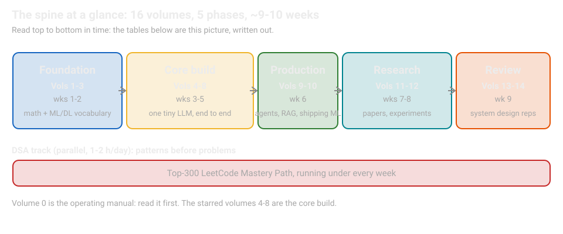
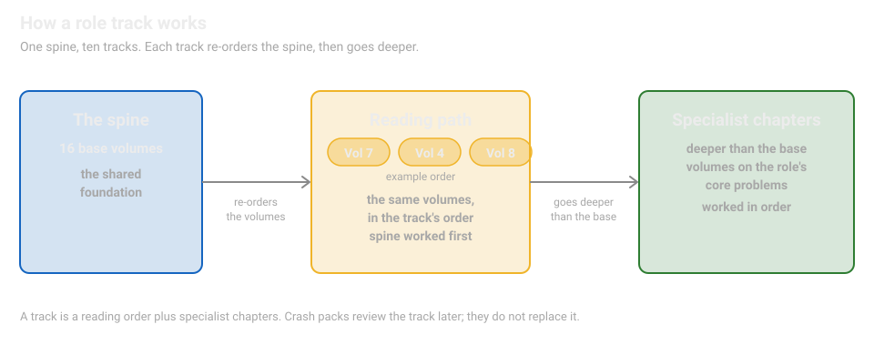
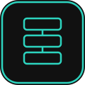
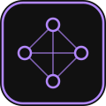
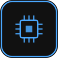
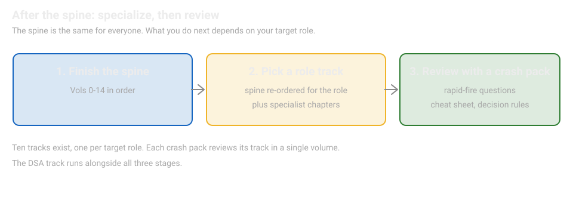
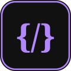

Research-Engineer CurriculumNo. 01 of 39 · Sept 2026 edition
Research-Engineer Curriculum
A research-engineer-first path to understanding LLMs (large language models) end to end: from math and ML foundations through pre-training, distributed training, post-training, inference, agents, and production systems, plus ten role-specialization tracks. Read the volumes in order. Start with Volume 0: How to Use This Curriculum.
Where to start. New to the whole curriculum: read Volume 0 first. Have a target role: go straight to the role tracks. Interviewing soon: start with the crash packs. Run the DSA track in parallel from day one.
About this knowledge base. This is the complete package: the master index, 16 base volumes, and 10 role-specialization tracks. Everything here works fully offline and contains no personal information.
The spine (read in order)
Phase 1 · Foundation (~2 weeks)
The math and ML vocabulary every later volume speaks.
| Vol | Title | What's inside | Status |
|---|---|---|---|
| 0 | How to Use This Curriculum | Study order, pacing, the capstone project, how volumes connect | Included |
| 1 | Math for ML | Linear algebra, probability, statistics, optimization, information theory, calculus. From zero, with visuals and labs | Complete |
| 2 | ML Foundations Bridge | Experiment design, eval methodology, metrics, leakage (test data leaking into training) and contamination (benchmark data seen during training) | Complete |
| 3 | Deep Learning for Researchers | Normalization (rescaling layer outputs during training), initialization (how weights start), optimizers (the rules that update weights), mixed precision (training with smaller number formats), checkpointing (saving training progress) | Complete |
Phase 2 · The Core Build (~3 weeks)
Grow one tiny LLM volume by volume: tokenize, pre-train, distribute, align, serve.
| Vol | Title | What's inside | Status |
|---|---|---|---|
| 4 | LLM Internals | Tokenization (turning text into model-readable pieces) from scratch, attention (the mechanism letting each token weigh the other tokens) with worked numerics, the transformer block (the repeated block that powers modern LLMs), RoPE (rotary position embedding: how positions enter attention), MHA (multi-head attention), MQA (multi-query attention: heads share keys and values), GQA (grouped-query attention), KV cache (stored key-value memory that makes generation fast) | Complete |
| 5 | Pre-training | Data pipelines, scaling laws (how model size and data trade off predictably), the training loop, inside a pre-training run | Complete |
| 6 | Distributed Training | DDP (distributed data parallel: the same model copied on each GPU, different data on each), FSDP/ZeRO (sharded data parallel: the model and its training state are split across GPUs), tensor and pipeline parallelism (splitting layers and stages across devices), checkpointing (saving and resuming training state), fault tolerance (surviving hardware failures), profiling (measuring where time goes) | Included |
| 7 | Post-training and RL | SFT (supervised fine-tuning: training on example answers), RLHF (reinforcement learning from human feedback), DPO (direct preference optimization: learning from preference pairs) derived from first principles, GRPO (group-relative policy optimization: an RL method that compares groups of outputs), RLVR (RL with verifiable rewards: rewards from checkable answers), Constitutional AI (training guided by a written constitution), reward hacking (the model gaming a flawed reward) | Complete |
| 8 | Inference and Serving | Batching (serving many requests together), disaggregation (splitting prompt processing from token generation onto separate machines), quantization (shrinking number precision for speed), benchmarking rigor. Serve your tiny model | Complete |
Phase 3 · Production (~1 week)
Agents, RAG, and shipping ML that survives contact with reality.
| Vol | Title | What's inside | Status |
|---|---|---|---|
| 9 | Agents, RAG, Production GenAI | Study guide: agents, RAG (retrieval-augmented generation: fetching documents before answering), evals (evaluation tests), guardrails (runtime safety checks) | Complete |
| 10 | Productionizing and MLOps | Pipelines, CI/CD (continuous integration and delivery: automated testing and release) for ML, monitoring, drift (model behavior shifting as data changes), cost engineering, reliability | Complete |
Phase 4 · Research (~2 weeks)
Read papers like a researcher, then tour the ideas that moved the field.
| Vol | Title | What's inside | Status |
|---|---|---|---|
| 11 | Research Methods | Reading papers, experiment design, ablations (removing one piece at a time to see what matters), negative results, reproducible write-ups | Complete |
| 12 | Guided Paper Spine | Transformer → GPT-3 → InstructGPT → scaling laws → DPO → MoE (mixture of experts: only some sub-networks activate per token) → R1 (reasoning models that think before answering). Each paper taught from zero, hand-held | Included |
Phase 5 · Review (~1 week)
Reps for the design reviews you will actually face.
| Vol | Title | What's inside | Status |
|---|---|---|---|
| 13 | ML System Design | LLM serving systems, training platforms, eval platforms, RAG at scale. Cost/latency tradeoffs | Complete |
| 14 | Communicating Research | Talking about unpublished work, research taste, failure stories, collaboration | Complete |

- Left to right is time. Each box is one phase; the box width mirrors its weeks.
- The red lane underneath never touches the phases. The DSA track is a separate lane, 1-2 hours a day, for the whole program.
Finished the spine? Pick one track and work its volumes in the track order. The spine gave you the shared base; the track adds the specialist depth your target role interviews on.
Role tracks
Ten role-focused guides built on the spine above. Each track re-orders the base volumes into a reading path for that role, then adds specialist chapters that go deeper than the base volumes on the role's core problems. Work the spine volumes in the track's reading order first, then the specialist chapters in order.

- Left to right is the build. The spine on the left is the shared foundation: 16 base volumes.
- The first arrow is the reorder. The same volumes, read in the track's order. The pill row shows an example order: Vol 7, then Vol 4, then Vol 8.
- The second arrow goes deeper. Specialist chapters cover the role's core problems, deeper than any base volume, and are worked in order after the spine.

Track 1 · LLM Research Engineer
The generalist path: end-to-end LLM mastery, from research foundations through training and serving systems.
Track 2 · Post-Training and Alignment Engineer
SFT, RLHF, DPO, and reward modeling: shaping base models into reliable assistants.
Track 3 · Inference and Serving Engineering
Low-latency, high-throughput serving: batching, quantization, disaggregation, and rigorous benchmarking.

Track 4 · Distributed Training Systems Engineer
Multi-GPU and multi-node training: parallelism strategies, fault tolerance, and profiling.
Track 5 · Evals and Safety Engineer
Evaluation methodology, benchmarks, red-teaming (deliberately attacking the model to find failures), and safety systems for deployed models.
Track 6 · Agent Systems Engineer
Agentic systems end to end: tools, planning, multi-agent patterns, evals, and guardrails.
Track 7 · Forward Deployed Engineer / AI Consultant
Shipping AI inside real organizations: discovery, solution design, deployment, and adoption.

Track 8 · AI Engineer
Applied LLM product engineering: RAG, prompting, evals, and production integrations.
Track 9 · ML Engineer
Production ML systems: data pipelines, training infrastructure, monitoring, and reliability.
Track 10 · Software Engineer, Backend and Systems
Backend and systems engineering for AI platforms: APIs, data systems, and distributed services.
Track done? The crash packs are review, not replacement: the same curriculum compressed for the week before the interview.
Crash packs
Potent single-volume reviews of the base curriculum and each role track: decision rules, must-memorize numbers, classic traps, rapid-fire questions with worked answers, and a one-page cheat sheet. Use them for fast review after reading the full volumes.
Crash Pack: Base Curriculum
All 16 base volumes compressed: 95 rapid-fire questions, 50-item master cheat sheet.
Crash: LLM Research Engineer
Generalist review: scaling, debugging, ablations, paper reading.
Crash: Post-training / Alignment
DPO, PPO (proximal policy optimization: the classic RLHF training algorithm), GRPO, reward modeling (training a model to score answers), eval iteration.
Crash: Inference and Serving
Latency math, quantization, batching, disaggregation, cost.
Crash: Distributed Training
Parallelism, collectives (GPU-to-GPU communication primitives), checkpointing, run health.
Crash: Evals and Safety
Eval design, red teaming, guardrails, safety cases.
Crash: Agent Systems
Patterns, tool design, reliability, cost control.
Crash: Forward Deployed Eng.
Scoping, enterprise deploys, unit economics.
Crash: AI Engineer
RAG, prompting, eval harnesses, structured output.
Crash: ML Engineer
Lifecycle, drift, CI/CD, cost-aware modeling.
Crash: SWE / Backend
APIs, data systems, and backend patterns for AI platforms.

- Left to right is the order. Tracks come after the spine, crash packs after the tracks. A crash pack reviews its track; it does not replace it.
- One track at a time. Pick the track that matches your target role and work its reading order, not the base volume order.
Running under all of the above: the DSA track starts day one and runs in parallel, 1-2 hours a day, because the interview loop tests both.
Parallel track · DSA
DSA means data structures and algorithms. The Top-300 LeetCode Mastery Path runs alongside the spine, 1-2 hours a day, pattern by pattern: learn the pattern's template first, then solve 2-3 problems with it.

- The badge marks the parallel lane. DSA never replaces spine work; it runs alongside it.
- Pattern first, problems second. Learn the template, then solve 2-3 problems with it.
Existing modules (referenced, not rebuilt)
- RRK Agentic AI Textbook v2 + Interview QA Bank v2 - agents, RAG, evals, guardrails
- ML (machine learning) / DL (deep learning) fundamentals refresher (+300 Q&A) - classical ML and DL basics
- DSA Pattern Fieldbook v3, LeetCode 500 Atlas, 300-problem curriculum
- FDE interview materials
Where to go next. Start with Volume 0, work the spine in order, then one role track, then its crash pack. Keep the DSA track running alongside from day one.
What's in this preview
Key takeaways
- Volume 0 - the operating manual: order, pacing, capstone, ground rules
- Volume 6 - distributed training: DDP, ZeRO/FSDP, tensor and pipeline parallelism, with CPU-tested labs
- Volume 12 - the guided paper spine: 14 landmark papers, every number verified against arXiv (the open research-paper archive)
- Start at Volume 0, then pick either volume. Each stands alone.
Generic learning material. No personal identifiers. Works fully offline. Built from an analysis of 180 frontier-lab engineering roles.